Я плакал всю ночь. Я ничего не мог поделать. Я был ребенком, что вообще ничего не понимал в этом мире.
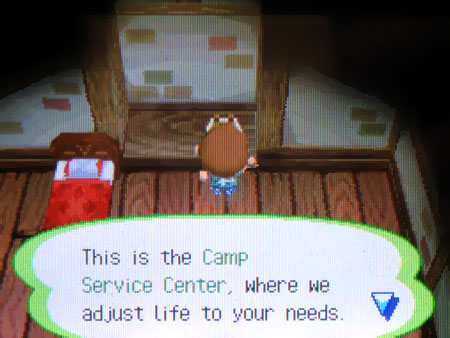
Я попытался позвонить маме по телефону, что находился в моей спальне, но всё, что я услышал – автоответчик, что нёс Оруэлловскую ахинею. Каков был мой шок, не увидев на задней стороне телефона провода. Просто шняга какая-то. Его даже заботливо прибили к полке.
Спал я крайне хреново, вздрагивал от любого шороха. Снились лишь сны о легионе полузверей- полулюдей, пытавшихся вломиться ко мне ночью и устроить неописуемую ересь.
Никто так и не пришёл.
На утро выдвигаюсь к Нуку. Придя в себя, словно после пьянки, я начал думать лишь об одном – о побеге. Но пока об этом не стоит никому афишировать. Вдобавок, я был голоден, а какой-нибудь кафешки или хотя бы столовой я не наблюдал. Одни лишь апельсины на деревьях.
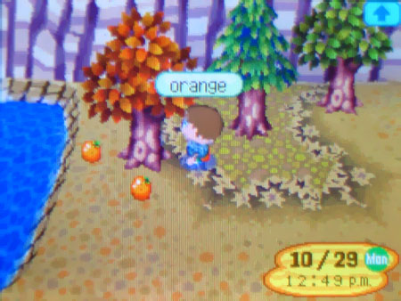
Я спросил Нука насчёт еды и оплаты. Нуку было поебать. Всё, что его волновало – это то, чтобы я работал от рассвета до заката.
В течение следующей недели меня гоняли выполнять различные поручения Тома и доставлять всякую хрень каждому жителю Лагеря, у которых, на удивление, довольно хорошо обставлены дома. Хотя чем они занимаются, я до сих пор не понял. Иногда я замечал, что ходят по этой земле словно зомби, но зачастую они сидят по домам.
В один день, Нук совершил фатальную ошибку.
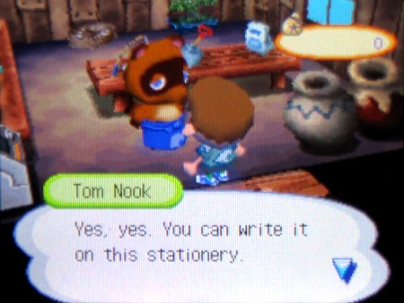
Он попросил написать рекламный текст жителю города и дал пустую бумажку. Это был мой шанс. Я собрался писать сообщение маме. В надежде, что та пеликанша не обратит внимание на адресата, я нашкрябал короткое сообщение.
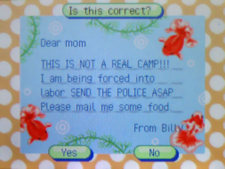
ЭТО НЕ НАСТОЯЩИЙ ЛАГЕРЬ!!! Меня здесь держат насильно. ВЫЗОВИ ПОЛИЦИЮ КМС. Пожалуйста, отправь еды по почте
Держа в своих потных руках, я отправил письмо. Всё, что мне оставалось делать – ждать.
Ждать пришлось недолго. К моему удивлению, получил письмо этим вечером. От моей мамы. В тот же день.
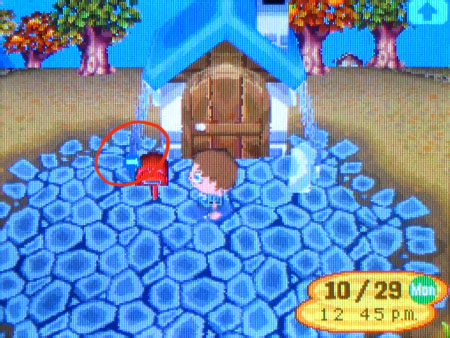
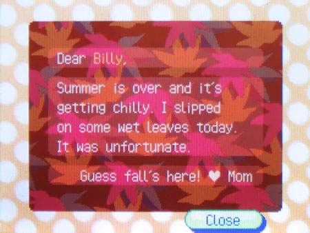
Что за…? Это, блядь, какая-то шутка? Я просил еды, а она мне отправила жёлудь? Больше похоже на несмешной прикол… Оу. ДА НУ НАХУЙ. НЕТ. Моя мама так и не получила письмо, и не получит его. Она не писала эту залупу! В одночасье все мои надежды были разбиты и теперь до меня дошло… они всё прознали. Всё было как в тумане и лежал я калачиком на кровати в надежде умереть. Но наступил новый день и голод вывел меня из этого состояния.
Нук сказал, что заплатит за работу, но от него я не видел ни копейки. Он лишь давал все больше поручений, а жители насмехались надо мной.
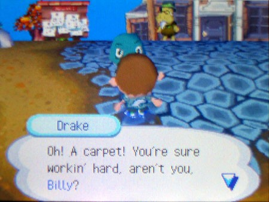
Он думал вообще, как я буду платить этот долг? Ответ прост: Он не думал.
Дни шли своим чередом.
К нам заселился новый житель по имени Патэ, и если вы думаете, что его имя схоже с едой, то вы абсолютно правы. Нук запрягает отнести ковёр этому селезню и я, скрипя зубами, несу ему.
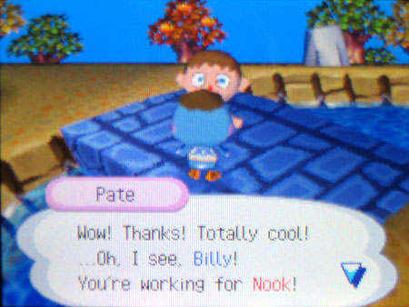
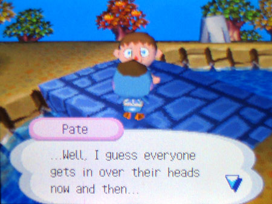
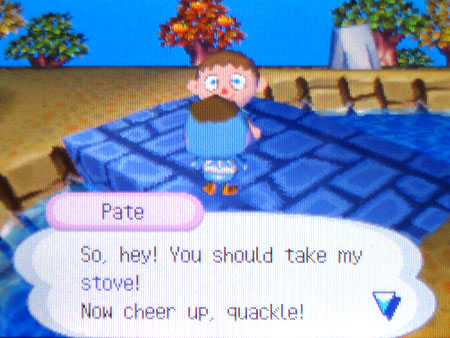
Патэ выдаёт мне довольно жуткую реплику, а затем происходит нечто странное. Кажется, он хотел назвать меня «крекером», но, когда я вечером возвращаюсь домой, он уже отправил в мою лачугу газовую плиту. С приближением зимы это может быть единственным, что не даст мне умереть. Не померещилось ли то, что я обрёл друга в этом ёбаном месте? Я устанавливаю плиту рядом со свечой. Неужели дела наконец-то налаживаются?
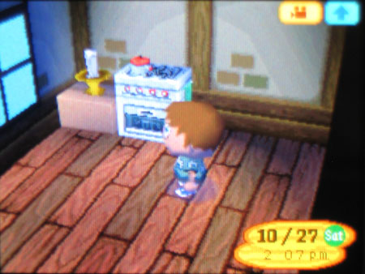
У меня начинает вырисовываться план. Риски есть, но другого пути нет. В тот день, когда Нук отвлёкся, я стянул немного бумаги из его лавки. Сегодня ночью напишу Патэ письмо — расскажу всё и попрошу о помощи. Он ведь только приехал, может, Нук ещё не успел его завербовать. Вечером я подсунул тонкий конверт под дверь этой утки. Всю ночь я ворочался и не мог уснуть в ожидании ответа.
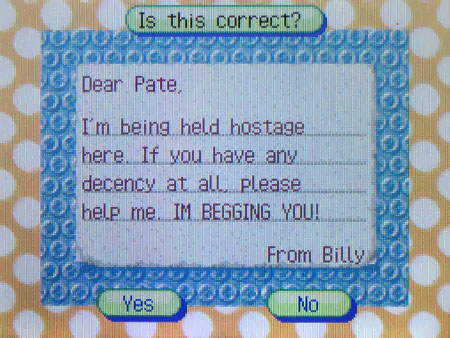
На следующий день, снова идя на работу, увидел Патэ, петлящего к себе домой аки зомби. Как будто бы он уже побывал у Нука. Я осторожно подошёл к нему. Не зная, что от него ждать, сказал ему «Привет».
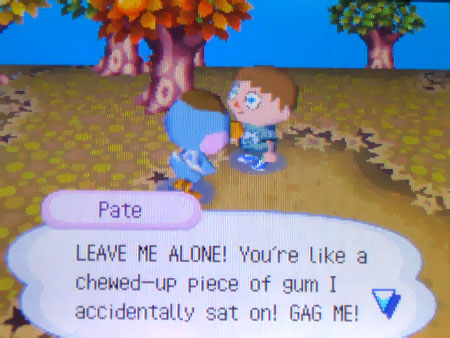
Стоило по-другому поступить. Теперь Патэ устроил концерт, и все смотрят на него косо. Краем глаза замечаю мэра, который подзывает меня, пока Патэ валит отсюда. Я подхожу к нему с осторожностью.
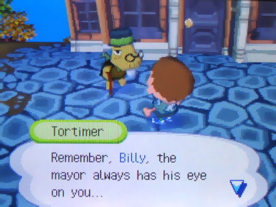
И тут проявляется полная картина происходящего. Ни мэр, ни жители, ни тот таксист не при делах. Это всё устроил Том Нук. И выберусь ли я отсюда – зависит только от меня.